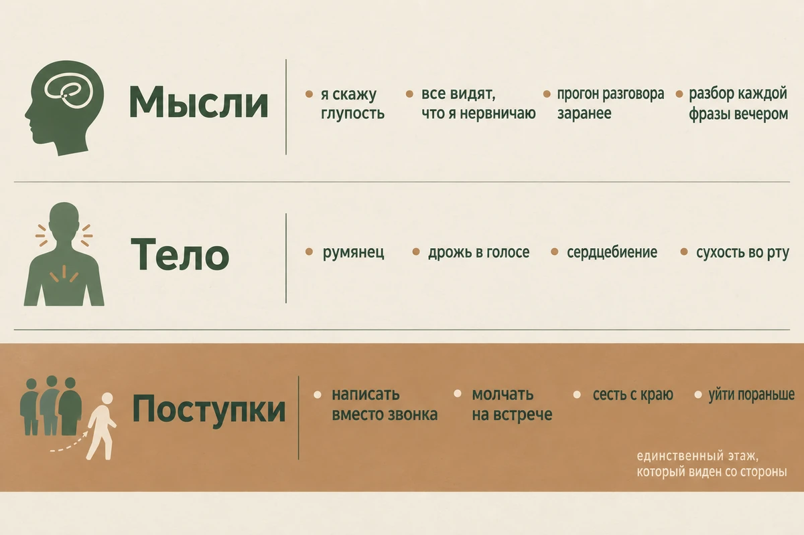
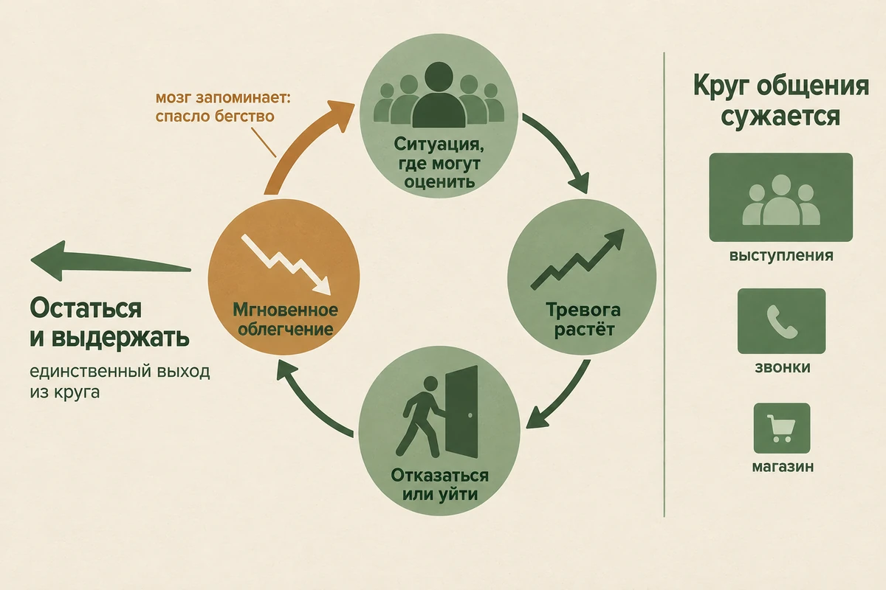
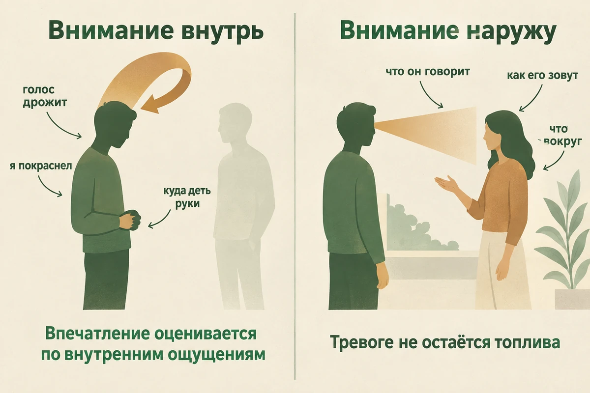
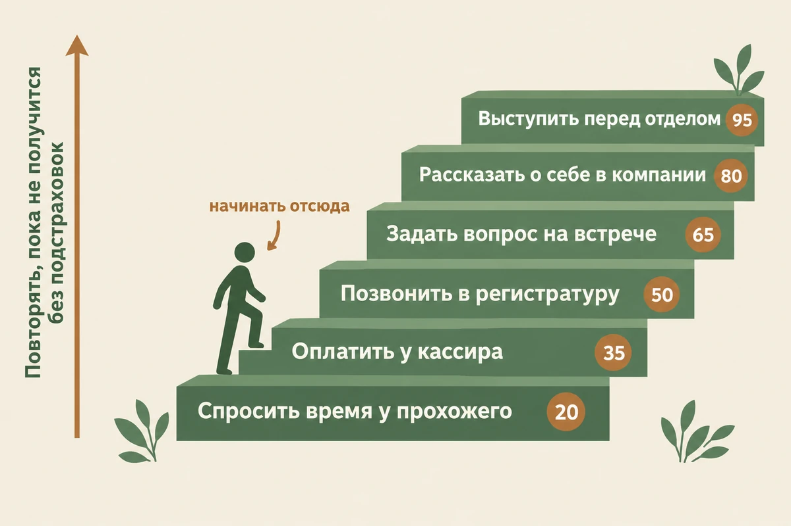
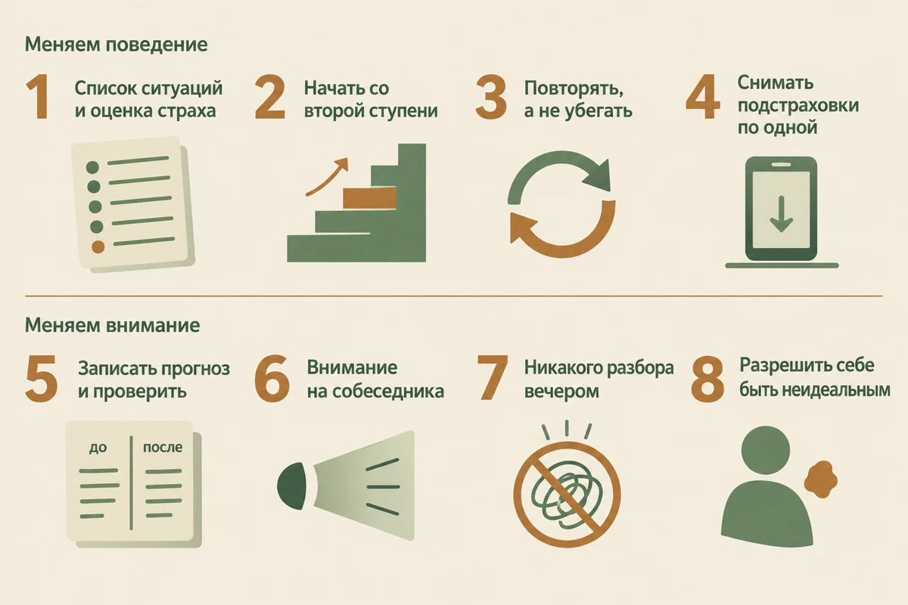

Главная → Блог → Социальная тревожность
Социальная тревожность: 8 шагов, чтобы перестать бояться людей
Обновлено: 08.09.2026 · 15 минут чтения
Социальная тревожность — это устойчивый страх оценки: не людей самих по себе, а того, что о вас подумают, если вы покажетесь странным, скучным или растерянным. Она держится не на «слабом характере» и не на нехватке навыков общения, а на двух вполне понятных механизмах: избегании, которое каждый раз даёт облегчение и тем самым укрепляет страх, и внимании, повёрнутом внутрь, — когда вместо собеседника человек следит за собственным голосом, руками и лицом. Ниже — чем это отличается от застенчивости и интроверсии, почему в переписке общаться легко, а вживую нет, и что делать по шагам, включая ту самую «лестницу», с которой начинают в терапии. И сразу главное: цель этой работы — не научиться никогда не волноваться, а перестать позволять тревоге решать, что вам можно делать, а что нельзя.
- Если встреча уже через час
- Что такое социальная тревожность
- Застенчивость, интроверсия и социофобия: в чём разница
- Как она проявляется: мысли, тело, поступки
- Почему она возникает
- Круг избегания: почему становится хуже
- Главная ловушка: внимание, повёрнутое внутрь
- Защитное поведение, которое всё портит
- 8 шагов, чтобы выйти из круга
- Звонок, выступление, знакомство: частые ситуации
- Что не работает
- Если упражнения делают только хуже
- Когда пора к специалисту
- Частые вопросы
Если встреча уже через час
Если вы открыли эту страницу перед выходом из дома, начните отсюда, а к объяснениям вернитесь потом.
- Не отменяйте. Отмена принесёт облегчение минут на десять и сделает следующий раз тяжелее. Если совсем невыносимо — сократите, но не отменяйте: зайти на двадцать минут лучше, чем не пойти.
- Выдох длиннее вдоха, две минуты. Вдох на четыре счёта, выдох на шесть-восемь. Это не выключит тревогу, но обычно немного снижает телесное возбуждение — и это самое надёжное из того, что успеваешь сделать за две минуты.
- Не репетируйте фразы. Заготовки рассыпаются при первом отклонении разговора от сценария и отнимают внимание в самый нужный момент.
- Назначьте себе задачу наружу. Например: узнать, чем занимаются двое из присутствующих. Внимание, занятое конкретным делом, не остаётся на себе.
- Разрешите себе волноваться. Дрожь в голосе, красные щёки и пауза — допустимы. Попытка их спрятать съедает больше сил, чем они сами.
- Никакого алкоголя «для смелости». Почему именно это делает хуже — ниже отдельным разделом.
Что такое социальная тревожность
Социальная тревожность — это страх оказаться под оценкой. Пугает не общение как таковое, а вероятность повести себя так, что о вас подумают плохо: сочтут глупым, скучным, навязчивым, странным. Поэтому она обостряется именно там, где есть наблюдатель: на выступлении, на собеседовании, в новой компании, в разговоре с начальником, иногда даже в очереди — если придётся что-то сказать вслух.
В умеренном виде это нормальная человеческая настройка. Нам важно, что о нас думают, и лёгкое волнение перед выступлением — не поломка, а признак того, что ситуация значима. Расстройством это становится, когда страх перестаёт быть соразмерным и начинает управлять решениями: человек отказывается от повышения, потому что там придётся вести совещания; не записывается в клинику, потому что придётся говорить с регистратурой; не идёт на день рождения, где будут малознакомые люди.
По данным Всемирной организации здравоохранения, тревожные расстройства — самая распространённая группа психических расстройств в мире; социальное тревожное расстройство — один из их видов. Начинается оно обычно рано, в подростковом возрасте, и без работы над ним может тянуться годами. При этом путь здесь понятный и проверенный: британское руководство NICE (CG159, пересмотрено в мае 2024 года) рекомендует взрослым специализированную индивидуальную КПТ как первый вариант психологической помощи.
Застенчивость, интроверсия и социофобия: в чём разница
Три вещи, которые постоянно путают, — и путаница здесь не безобидная. Интроверту советуют лечиться, а человеку с тревожным расстройством говорят «ты просто стесняешься, перерастёшь».
| Признак | Интроверсия | Застенчивость | Социальная тревожность |
|---|---|---|---|
| Суть | Общение тратит энергию, одиночество её восстанавливает | Смущение в новых ситуациях, особенно вначале | Страх негативной оценки |
| Хочется ли общаться | В умеренном количестве — да, и это приятно | Да, но неловко начать | Часто очень хочется, и именно это мучительно |
| Что со временем | Ничего, это устойчивая особенность | Волнение спадает, когда люди становятся знакомыми | Страх держится и после того, как люди знакомы |
| Есть ли избегание | Нет, есть дозирование | Небольшое, ситуативное | Да, систематическое, и оно растёт |
| Что после встречи | Усталость, довольно спокойная | Быстро отпускает | Разбор «что я сказал не так», иногда несколько дней |
| Сужается ли жизнь | Нет | Обычно нет | Да: работа, учёба, отношения |
Практический критерий один, и он простой: смотрите не на силу смущения, а на цену. Если из-за страха оценки вы отказываетесь от того, что вам нужно или чего вы хотите, — это уже повод проверить, не переросло ли ситуативное волнение в социальное тревожное расстройство. Ставит такой диагноз специалист, но заметить цену можно и самому.
Похоже ли это на социальную тревожность
Не диагностическая шкала, а список того, что чаще всего приводит людей к этой теме. Чем больше пунктов вы узнаёте, тем больше оснований разбираться дальше.
- вы откладываете звонки и предпочитаете написать, даже когда это дольше;
- молчите на совещании, хотя вам есть что сказать;
- заранее прокручиваете разговор в голове, а после — вспоминаете каждую свою фразу;
- вам неловко есть, пить или писать, когда на вас смотрят;
- вы уверены, что окружающие замечают ваше волнение и оценивают его плохо;
- избегаете взгляда, садитесь с краю, уходите раньше;
- берёте с собой «подстраховку» — телефон, бокал, заготовленные фразы;
- отказались от работы, учёбы, встречи или знакомства именно из-за страха оценки.
И отдельная оговорка: одно не исключает другого. Интроверт может иметь социальную тревожность, экстраверт — тоже, и второй случай встречается чаще, чем принято думать: человек ходит на все вечеринки, много говорит, а потом до ночи перебирает в голове каждую свою фразу.
Как она проявляется: мысли, тело, поступки
Разбирать удобнее по трём этажам — на каждом работают разные приёмы.
- Мысли. «Я скажу глупость», «все заметят, что я нервничаю», «я неинтересный». Отдельно — прогон заранее, за несколько дней до события, и разбор после: подробное восстановление в памяти всего, что вы сказали, с обвинительным уклоном. Разбор после — самая изматывающая часть, и о нём почти никто не рассказывает вслух.
- Тело. Румянец, потливость, дрожь в руках и голосе, сухость во рту, сердцебиение, ком в горле. Пугают не сами реакции, а мысль, что они видны, — и часто именно страх покраснеть вызывает румянец.
- Поступки. Отказы от встреч, молчание на совещаниях, касса самообслуживания вместо кассира, сообщения вместо звонков, место в дальнем углу, ранний уход. Всё это вместе называется избеганием, и именно оно превращает эпизодическое волнение в устойчивую проблему.

Если тревога у вас не только в социальных ситуациях, а фоном почти всё время, стоит посмотреть шире — начните с полного гида по тревоге, там разобраны все её виды и то, чем они отличаются друг от друга.
Специальные шкалы социальной тревожности существуют — самые известные это LSAS и SPIN, — но у нас их нет: они закрыты авторскими правами, и опубликовать их вопросы мы не можем. Что можно сделать здесь и сейчас: оценить общий уровень тревоги за две недели тестом GAD-7 — семь вопросов, результат сразу и без регистрации. Он не различает виды тревоги и не ставит диагноз, но полезен, чтобы понять, тревожно ли вам только с людьми или вообще.
Почему она возникает
Единственной причины нет, обычно складывается несколько.
- Темперамент. Часть людей с рождения сильнее реагирует на новое и на неодобрение. Это не приговор, а стартовые условия: такой человек быстрее приобретает страх и медленнее от него избавляется.
- Опыт публичного унижения. Провал у доски, насмешка в компании, травля в школе. Одного яркого эпизода бывает достаточно, чтобы сложилось правило «показываться опасно» — о том, как ранние события задают взрослые реакции, подробно в статье о детских травмах.
- Семейная среда. Критикующие или сами тревожные родители, атмосфера «а что люди скажут», гиперопека, при которой ребёнок не получил опыта самостоятельно справляться с неловкими ситуациями.
- Убеждения о себе. «Я хуже других», «меня примут только идеальным». Здесь социальная тревожность смыкается с низкой самооценкой и синдромом самозванца: и там, и там человек живёт с ощущением, что его вот-вот разоблачат.
- Долгий перерыв в общении. Удалённая работа, переезд, тяжёлый период — и навык обходится без тренировки. Сам по себе перерыв тревожности не создаёт, но заметно усиливает уже имеющуюся, потому что освободившееся место быстро занимает избегание.
Заметьте, чего в этом списке нет: «неумения общаться». Люди с социальной тревожностью, как правило, владеют социальными навыками не хуже других — в спокойной обстановке, с близкими, они разговаривают прекрасно. Проблема не в дефиците умения, а в том, что страх выключает доступ к нему.
Круг избегания: почему становится хуже
Это центральный механизм, и без него ничего не понятно. Выглядит он так: появляется пугающая ситуация → тревога растёт → человек уходит или не идёт вовсе → тревога мгновенно падает → наступает облегчение. Облегчение и есть награда, и мозг делает из неё вывод: опасность была настоящей, а спастись удалось именно бегством.
Отсюда два следствия, которые обычно узнают на своём опыте:
- Круг сужается. Сначала отпадают выступления, потом совещания, потом звонки, потом магазин с живым кассиром. Каждый отказ забирает ещё немного территории.
- Опровержение не приходит. Вы так и не узнаёте, что было бы, если бы вы остались, — а значит, страшный прогноз никогда не проверяется и продолжает считаться верным.
Похожий принцип — краткосрочное облегчение, которое закрепляет привычку, — работает и при навязчивых мыслях, и при панических атаках. Механизмы там не одинаковые, но выход из круга похож: он лежит через возвращение в ситуацию, а не через уход из неё.

Главная ловушка: внимание, повёрнутое внутрь
Вторая опора социальной тревожности не так очевидна, и именно её чаще всего пропускают. В пугающей ситуации внимание разворачивается на самого себя: как звучит мой голос, куда я дел руки, покраснел ли я, достаточно ли осмысленное у меня лицо. Британские исследователи Дэвид Кларк и Адриан Уэллс описали это в 1995 году как ключевой механизм, который удерживает социальную тревожность, — и с тех пор на этом построена вся когнитивно-поведенческая работа с ней.
Ловушка в том, что человек начинает судить о впечатлении, которое производит, по своим внутренним ощущениям. Ощущается, что щёки горят, — значит, я багровый. Ощущается, что голос дрожит, — значит, все это слышат. На деле разрыв обычно велик: то, что изнутри переживается как катастрофа, снаружи чаще всего выглядит как лёгкое волнение. И даже когда собеседник его замечает, это не значит, что он оценивает его так же сурово, как вы, — он в этот момент занят собственными мыслями и своим впечатлением.
У этого разворота внимания есть и вторая цена, чисто практическая. Внимание — ресурс ограниченный: пока половина его уходит на самонаблюдение, на разговор остаётся меньше. Человек хуже слышит собеседника, теряет нить, дольше подбирает слова — и получает подтверждение «я плохо общаюсь». То есть тревога сама создаёт то, чего боится.
Практический вывод простой: внимание нужно возвращать наружу — на лицо собеседника, на смысл сказанного, на детали обстановки. Это не отвлечение и не «переключение с плохого на хорошее», а прямое лишение тревоги топлива. Тренировать это удобно вне разговоров, в спокойных условиях — тем же способом, что и в практике осознанности, где внимание раз за разом возвращают к выбранному объекту.

Защитное поведение, которое всё портит
Между «пойти» и «не пойти» есть промежуточный вариант, который кажется компромиссом: пойти, но подстраховаться. Это и называется защитным поведением.
- заранее заготовить фразы и мысленно их прогонять;
- держать в руке бокал, телефон или сумку — «чтобы было чем занять руки»;
- говорить тихо и коротко, чтобы не сказать лишнего;
- прятать лицо за волосами, чашкой, воротником;
- избегать взгляда, садиться с краю, приходить позже и уходить раньше;
- много спрашивать, чтобы не рассказывать о себе.
Каждое из этих действий приносит облегчение — и каждое мешает страху угаснуть. Причина в том, как мозг объясняет благополучный исход: «всё прошло нормально, потому что я держался за телефон и молчал». Вывод «ситуация в принципе безопасна» так и не появляется. Хуже того, часть подстраховок сама портит впечатление: тихая речь, короткие ответы и отведённый взгляд читаются собеседником как холодность или незаинтересованность.
Поэтому от защитного поведения отказываются сознательно и по одному: пойти на встречу — уже хорошо, но пойти и не достать телефон в первой же паузе — это то, что действительно двигает дело.
8 шагов, чтобы выйти из круга
- Составьте список ситуаций и оцените каждую от 0 до 100. От «спросить время у прохожего» до «выступить перед отделом». Двадцать пунктов лучше, чем пять: чем мельче шаги, тем реальнее лестница.
- Начните со второй ступени снизу. Не с самой лёгкой — она ничего не изменит, и не с тяжёлой — она отобьёт желание. Нужен уровень примерно на 30–40 из 100: страшно, но выполнимо.
- Повторяйте ступень, а не убегайте. Одного захода почти всегда мало: нужен накопленный опыт пребывания в ситуации без бегства и подстраховок. И ориентир для перехода выше — не «тревога исчезла», а «я могу это сделать, даже когда тревожно». Тревога имеет полное право оставаться: смысл упражнения не в том, чтобы её не было, а в том, чтобы она перестала определять ваши решения.
- Снимайте по одной подстраховке за раз. Тот же разговор, но без телефона в руке. Потом — с обычной громкостью голоса. Потом — глядя в лицо. Каждое такое снятие ценнее, чем прыжок на ступень выше.
- Превратите поход в эксперимент с записанным прогнозом. До: «я запнусь, и все переглянутся», вероятность 90%. После: что произошло на самом деле. Записывать обязательно, иначе память задним числом подгонит результат под ожидание. Это стандартный приём когнитивно-поведенческой терапии, и работает он именно на бумаге.
- Держите внимание снаружи. Заранее выберите, за чем будете следить: за содержанием разговора, за именами, за тем, что человек рассказывает. Заметили, что оцениваете себя, — верните внимание на собеседника. За встречу так придётся сделать раз двадцать, и это нормально.
- Запретите себе разбор после. Вечером мозг предложит «проанализировать» встречу — это не анализ, а тревожная жвачка: она добавляет не выводы, а стыд. Договоритесь записать одну строчку о том, что прошло нормально, и на этом закрыть тему.
- Разрешите себе быть неидеальным. Если страх держится на требовании выглядеть безупречно, проверьте это экспериментом: задайте простой вопрос, даже если он кажется глупым, или не заполняйте паузу в разговоре. Цель — не выставить себя нелепо, а проверить прогноз и увидеть, что происходит на самом деле: обычно ничего, и внимание окружающих переключается через несколько секунд.

Отдельно про темп. Лестница — не соревнование: если ступень не даётся третью неделю, значит, она слишком высокая, и между ней и предыдущей нужно вставить промежуточную. Ни один шаг не обязан быть героическим.
Разобрать конкретную ситуацию бывает проще вслух: что вы ожидали, что произошло на самом деле и какая мысль запустила тревогу. Это удобно сделать сразу после встречи, пока детали свежие, и без опасения, что вас оценят. Анонимно, без регистрации, круглосуточно.
Разобрать ситуацию с социальной тревогой
Звонок, выступление, знакомство: частые ситуации
Телефонный звонок. Пугает тем, что нет лица собеседника и нельзя отредактировать сказанное. Помогает написать на бумаге первую фразу и цель звонка — именно первую фразу, а не весь диалог. И считать успехом сам факт звонка, независимо от того, как он прошёл.
Выступление и совещание. Готовьте содержание, а не текст наизусть: заученная речь рассыпается от первой заминки, а понятая тема — нет. На совещании полезно правило «одна реплика»: заранее решить, что скажете хотя бы одну вещь, любую, и выполнить это в первые десять минут — дальше говорить значительно легче.
Новая компания. Задача не «понравиться всем», а поговорить с одним человеком. Работает простое: спрашивать и слушать. Это одновременно снимает нагрузку с вас и разворачивает внимание наружу.
Знакомство и свидание. Самая частая ошибка — заранее решить, что оценивают вас, а вы нет. Возвращение к взаимности («мне тоже нужно понять, интересно ли мне») снижает тревогу лучше любых дыхательных техник.
Магазин, регистратура, вопрос прохожему. Идеальные нижние ступени лестницы: короткие, безопасные, повторяемые хоть каждый день. С них и стоит начинать, даже если кажется, что это несерьёзно.
Если из-за страха живого общения стало мало, разбираться придётся с обеими половинами сразу: страх лечится возвращением в ситуации, а вот пустой круг общения приходится собирать заново — и это отдельная работа.
Что не работает
- Алкоголь «для смелости». Снимает тревогу на вечер, возвращает её усиленной на следующий день и приучает мозг к тому, что общение выносимо только с бокалом. Через несколько месяцев трезвая встреча пугает больше, чем до начала, а риск проблем с алкоголем растёт — NICE прямо советует спрашивать об употреблении у людей с социальной тревожностью. Как устроен откат, подробно разобрано в статье про алкоголь и тревогу.
- Заученные реплики и сценарии. Дают ощущение подготовленности и ломаются от первого неожиданного вопроса, оставляя человека без плана.
- Совет «просто будь увереннее». Уверенность — результат опыта, а не его причина. Требовать её на входе — то же самое, что требовать загара перед выходом на солнце.
- «Представь их всех голыми». Ещё одна форма отвлечения: внимание уходит от разговора, а тревога после короткой паузы возвращается.
- Ждать, «пока буду готов». Готовность не приходит сама: без практики страх не уменьшается, а растёт.
- Успокоительные без назначения. Отдельная ловушка: препарат становится очередной подстраховкой, и мозг усваивает «я справился только благодаря таблетке». Медикаменты в этой теме бывают уместны, но назначать их должен врач и обычно вместе с терапией, а не вместо неё.
Если упражнения делают только хуже
Лестница — не универсальный рецепт, и честно сказать об этом важнее, чем красиво закончить статью. Бывает, что самостоятельная практика идёт не туда.
- Ступень вызывает не тревогу, а панику. Если в ситуации накрывает приступом с сердцебиением и страхом потерять контроль, дело может быть не только в социальной тревожности — посмотрите разбор панических атак и не идите дальше через силу.
- После упражнения становится хуже на несколько дней. Обычно это признак того, что шаг был слишком большим, а не того, что «метод не работает». Уменьшите ступень вдвое.
- Отказаться от подстраховок не получается вообще. Это нормальная точка, на которой обычно и подключают специалиста: со стороны видно, какая именно подстраховка держит круг.
- Несколько недель — и ничего не меняется. Иногда под социальной тревожностью лежит что-то ещё: депрессия, последствия травли, употребление алкоголя. Тогда работать надо и с этим тоже.
Продолжать через силу в этих случаях не нужно. Разумнее обсудить план с психологом или врачом: подобрать посильный уровень шагов и проверить, нет ли у симптомов другой причины.
Когда пора к специалисту
Поводы обратиться, не дожидаясь, пока «само пройдёт»:
- страх оценки держится полгода и дольше и не слабеет;
- вы отказались от работы, учёбы или отношений из-за него;
- подготовка к обычной встрече занимает несколько дней, а разбор после — несколько вечеров;
- вы стали пить, чтобы общаться;
- появились подавленность, потеря интереса, ощущение бессмысленности — социальная тревожность часто идёт вместе с депрессией;
- появляются мысли навредить себе.
Метод первого выбора здесь — когнитивно-поведенческая терапия: руководство NICE рекомендует взрослым специализированную индивидуальную КПТ как первый вариант психологической помощи, и главную роль в её протоколах играют постепенная экспозиция, поведенческие эксперименты и отказ от защитного поведения. Если сильна самокритика и стыд за само волнение, помогает добавить приёмы терапии, сфокусированной на сострадании. Куда обратиться бесплатно — в справочнике помощи.
Частые вопросы
Как отличить застенчивость от социальной тревожности?
Разница не в силе смущения, а в том, сколько оно забирает. Застенчивый человек волнуется в начале, но остаётся в ситуации и постепенно расслабляется. При социальной тревожности страх приходит заранее, держится всю встречу и не отпускает после неё, а главное — заставляет отказываться: не звонить, не спрашивать, не идти. Если из-за страха оценки вы уже сузили свою жизнь, это повод проверить, не переросло ли ситуативное волнение в социальное тревожное расстройство.
Как перестать бояться общения с людьми?
Ключ в том, чтобы перестать избегать, но не рывком. Составьте лестницу ситуаций от почти нестрашных до тяжёлых, начните со второй ступени и повторяйте каждую до тех пор, пока не сможете проходить её без бегства и подстраховок; тревога при этом не обязана исчезнуть полностью. Одновременно отказывайтесь от защитного поведения — заготовленных фраз, взгляда в телефон, репетиции ответов — и переводите внимание с себя на собеседника и на то, что происходит вокруг.
Социофобия — это болезнь или черта характера?
Социальное тревожное расстройство — признанный диагноз, а не свойство личности и не недостаток воли. Ставит его врач или клинический психолог, и критерий там не «я стесняюсь», а устойчивый страх оценки, который сохраняется месяцами и заметно ограничивает работу, учёбу или личную жизнь. При этом состояние хорошо изучено: британское руководство NICE рекомендует взрослым специализированную индивидуальную КПТ как первый вариант психологической помощи, и обращаться имеет смысл на любой стадии.
Почему в переписке общаться легко, а вживую тяжело?
Переписка убирает всё, чего боится социальная тревожность: паузу, которую нечем заполнить, свой голос, взгляд собеседника и невозможность отредактировать сказанное. Она даёт время подготовить ответ и спрятать реакцию тела. Поэтому текст ощущается безопасным — но по этой же причине он не переучивает страх, а поддерживает его: опыт «я справился» в живом разговоре так и не появляется.
Помогает ли алкоголь справиться с волнением в компании?
На один вечер — да, и в этом ловушка. Алкоголь снимает тревогу в моменте, но на следующий день она возвращается сильнее из-за отката нервной системы, а мозг тем временем запоминает, что общение выносимо только с бокалом. Через несколько месяцев такой практики трезвая встреча пугает больше, чем до начала, а риск проблем с алкоголем растёт — поэтому NICE советует специально спрашивать об употреблении у людей с социальной тревожностью.
Как справиться с тревогой перед выступлением или собеседованием?
Готовьте содержание, а не текст наизусть: заученная речь рассыпается от первой же заминки. За несколько часов сократите кофе, а перед входом несколько минут подышите так, чтобы выдох был длиннее вдоха: это обычно немного снижает телесное возбуждение. В самой ситуации держите внимание на том, что говорите и кому, а не на себе; и заранее решите, что дрожь в голосе и пауза допустимы, потому что попытка их скрыть отнимает больше сил, чем они сами.
Социофобия и социальная тревожность — это одно и то же?
В обычной речи это синонимы, и разбираться в различии читателю не обязательно. В профессиональной терминологии сейчас принято говорить «социальное тревожное расстройство» — так формулируют и NICE, и современные классификации. Слово «социофобия» осталось от более раннего названия и по-прежнему широко используется, в том числе в русскоязычной среде. Разницы в сути за этими словами нет.
Можно ли справиться с социальной тревожностью самостоятельно?
При умеренной выраженности — часто да: лестница ситуаций, отказ от подстраховок и перевод внимания наружу работают и без специалиста, если делать это регулярно и записывать результат. Обращаться стоит, когда страх заметно ограничивает работу, учёбу или отношения, когда упражнения раз за разом делают хуже или когда отказаться от избегания не получается вообще. Это не признак того, что вы плохо старались, — это ровно та точка, ради которой существует помощь.
Проходит ли социальная тревожность с возрастом?
Рассчитывать на это не стоит. У части людей проявления со временем меняются, но чаще социальная тревожность начинается в подростковом возрасте и без целенаправленной работы избегание сохраняется годами: человек просто выстраивает жизнь так, чтобы реже попадать в пугающие ситуации, и со стороны это выглядит как «перерос». При этом она хорошо поддаётся лечению в любом возрасте, и чем раньше начать, тем меньше успевает сузиться круг общения и профессиональных возможностей.
Статья носит просветительский характер и не заменяет консультацию специалиста. Если вам прямо сейчас невыносимо тяжело или появляются мысли о том, чтобы причинить себе вред, позвоните: 112 — при угрозе жизни; +7 (495) 989-50-50 — круглосуточная линия ЦЭПП МЧС России; 8-800-2000-122 (с мобильного — 124) — детям, подросткам и их родителям; 051 (с мобильного 8 (495) 051) — для Москвы. Куда ещё можно обратиться бесплатно — в справочнике помощи.
Читать также
- Тревога: полный гид по видам и способам справиться — если тревожно не только с людьми.
- Тест на тревожность GAD-7 — 7 вопросов, результат сразу и без регистрации.
- Как справиться с тревогой: 8 техник — быстрые приёмы на момент, когда накрыло.
- Синдром самозванца: 7 способов перестать чувствовать себя обманщиком — тот же страх разоблачения, но на работе.
- Как справиться с одиночеством: 8 шагов — если круг общения уже сузился.
- Тест на одиночество (шкала UCLA) — 20 вопросов о том, насколько вы чувствуете связь с людьми: при социальной тревожности одиночество часто оказывается второй половиной проблемы.
- Алкоголь и тревога: почему наутро хуже — почему «для смелости» не работает.
- Как повысить самооценку: 8 шагов — про то, что часто лежит под страхом оценки.
- Когнитивно-поведенческая терапия — метод первого выбора при социальной тревожности.
Материал подготовлен командой AI Therapist и основан на доказательных подходах к работе с тревогой — прежде всего на когнитивно-поведенческой терапии, где при социальной тревожности используются постепенная экспозиция, отказ от защитного поведения и тренировка направленности внимания. Описание механизма внимания, повёрнутого на себя, приводится по когнитивной модели социальной тревожности Кларка и Уэллса. Статья носит просветительский характер, не является медицинской рекомендацией и не заменяет консультацию специалиста.
Источники: NHS — Social anxiety (social phobia), ВОЗ — Anxiety disorders, NICE CG159 — Social anxiety disorder: recognition, assessment and treatment (опубликовано в 2013 году, пересмотрено 21 мая 2024 года), Clark D. M., Wells A. «A cognitive model of social phobia», 1995 — о внимании, направленном на себя, и защитном поведении. Источники проверены 08.09.2026.
Кто отвечает за содержание сайта и по каким правилам мы готовим материалы — на странице о проекте.